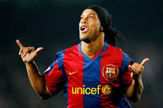
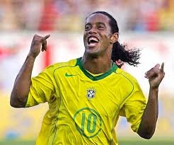
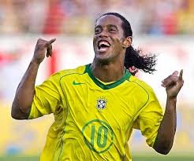

подробно о рональдинио

 

Рона́лду ди Аси́с Море́йра[7] (порт.-браз. Ronaldo de
Assis Moreira; род. 21 марта 1980, Порту-Алегри[3]),
более известный как Роналди́ньо (порт.-браз.
Ronaldinho) и Роналди́ньо Гау́шо[8] (порт.-браз.
Ronaldinho Gaúcho) — бразильский футболист,
выступавший на позиции атакующего полузащитника и нападающего.
Считается одним из величайших футболистов всех времён
, завоевал две награды «Лучший игрок года» и «Золотой мяч»
ФИФА. Он единственный игрок, выигравший чемпионат мира,
Кубок Америки, Кубок конфедераций, Лигу чемпионов, Кубок
Либертадорес и «Золотой мяч»[9]. Роналдиньо — икона мирового
футбола, он славился своими способностями к дриблингу,
точностью штрафных ударов, использованием трюков, финтов
, передач без обводки и ударов, а также умением забивать
мячи и создавать голевые моменты. За свою карьеру он был
одним из самых дорогих футболистов мира[10][11][12][13].
Он известен под прозвищем «O Bruxo» («Волшебник»)[14].
Роналдиньо дебютировал за «Гремио» в 1998 году. В возрасте
20 лет бразилец был куплен французским «Пари Сен-Жермен», где выиграл
Кубок Интертото, а в 2003 году подписал контракт с каталонской «Барселоной».
В свой второй сезон в составе «сине-гранатовых» он получил свою первую награду
«Лучший игрок года» по версии ФИФА, а «Барса» выиграла титул чемпиона Испании.
Последовавший за этим сезон 2005/06 считается одним из лучших в его карьере,
так как именно благодаря бразильцу «Барселона» выиграла Лигу
чемпионов впервые за четырнадцать лет, и ещё один титул чемпиона Испании
, а Роналдиньо получил «Золотой мяч» 2005 года и вторую награду
игрока года. Забив два мяча в Эль-Класико в ворота мадридского
«Реала», Роналдиньо стал вторым игроком «сине-гранатовых» после
Диего Марадоны в 1983 году, которому аплодировали стоя болельщики
«сливочных» на «Сантьяго Бернабеу». Благодаря этим успехам Роналдиньо
многие считают, что он изменил историю «Барселоны»[15].